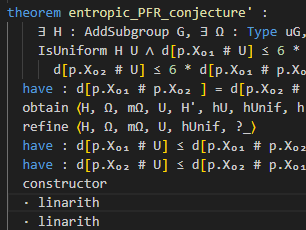

Hi! I'm Ben, also known as peabrainiac around here. I'm currently a full-time student of mathematics, physics and computer science at the Humboldt University of Berlin, but also interested
in graphics programming, fractals (in particular the mandelbrot set), automated theorem proving and web development. This place is where I put most of my programming projects, like small
browser games, fractal renderers, numerical experiments and others as you can see below.
Some time during 2023 I stumbled upon the game gridentify by Three Point Consulting. I liked the concept,
but noticed that the game became mostly dependent on luck quite fast, as the rectangular structure of the grid makes it easy for patterns with no equal neighbouring digits to spawn in
and end your run. In an attempt to fix this I've now written my own version of the game with a hexagonal grid instead, which can be found here.
The idea behind it is that the hexagonal grid admits more connections between tiles while also having fewer tiles in total, giving you more options for your moves without making the game too long/easy. I've also tweaked the scoring so that combining a lot of tiles at once yields a lot more points, to incentivise more risky playstyles over ones in which you only ever combine two or three tiles at once.
The idea behind it is that the hexagonal grid admits more connections between tiles while also having fewer tiles in total, giving you more options for your moves without making the game too long/easy. I've also tweaked the scoring so that combining a lot of tiles at once yields a lot more points, to incentivise more risky playstyles over ones in which you only ever combine two or three tiles at once.

Over the course of the summer of 2023 I've spent quite a lot of time finally learning Lean 4, the latest version of a theorem
proving language I had already been loosely following for a while. While my initial efforts & learning projects did not really result in anything worth mentioning here, I did learn enough
from them to then successfully contribute to Terence Tao's formalisation of his proof of the polynomial Freiman-Ruzsa conjecture (short pfr)
that he organised this fall. The initial effort that I was part of took roughly three weeks and was even featured in
a Quanta article, though a more slowly paced effort to extend the
formalised result is still ongoing.
Of course this is only something I contributed to rather than a project of my own, and my contributions were also relatively minor when compared to some of the others. Nonetheless this is something I'm happy to have been a part of, and I'm looking forward to doing more with Lean in the future.
Of course this is only something I contributed to rather than a project of my own, and my contributions were also relatively minor when compared to some of the others. Nonetheless this is something I'm happy to have been a part of, and I'm looking forward to doing more with Lean in the future.
 During the winter semester of 2022/2023 I took a computer graphics course at university for which I also had to write and submit a graphics programming project of my own choice. I used this
opportunity to finally experiment with geodesic raytracing myself, based on the blog post
Michael Moroz published a while ago. The end result is this, a renderer for Schwarzschild black holes with
an (artistic, not physically based) accretion disk.
During the winter semester of 2022/2023 I took a computer graphics course at university for which I also had to write and submit a graphics programming project of my own choice. I used this
opportunity to finally experiment with geodesic raytracing myself, based on the blog post
Michael Moroz published a while ago. The end result is this, a renderer for Schwarzschild black holes with
an (artistic, not physically based) accretion disk.
I also experimented with integrating mesh rendering into this a bit, but in the end didn't have the time to fully get it to work and as such left it behind a setting. As usual, the project is also still not as polished as I'd like, but it's nonetheless what I'll have to leave it at for now.
During the summer of 2022 I read through a paper by Dierk Schleicher, seeking to better unterstand parameter rays and angled internal addresses.
In the process I wrote this, a web app that uses several of the algorithms outlined in the paper to find all minibrots and bulbs in the mandelbrot set,
ordered by their period, and display them together with several pieces of information about them, including their external angles, kneading sequences and angled internal addresses.
While this so far works great, the page isn't yet all that useful as it's still lacking some sort of search or filter system - because there's just so many minibrots, and they are all shown here, you have to scroll down for quite a while before even finding one of period higher than 10. I also haven't yet gotten around to implementing several more details I wanted to display, such as the coefficients needed for the rendering method I already explored in a shader recently.
While this so far works great, the page isn't yet all that useful as it's still lacking some sort of search or filter system - because there's just so many minibrots, and they are all shown here, you have to scroll down for quite a while before even finding one of period higher than 10. I also haven't yet gotten around to implementing several more details I wanted to display, such as the coefficients needed for the rendering method I already explored in a shader recently.
After focusing mostly on my studies at university throughout most of 2021, and not coding much as a result, I eventually decided to at least implement the rendering algorithm for the mandelbrot set I had
already in mind in a shader, without focusing much on interactivity and a nice gui. What I eventually ended up with is a shadertoy shader, rendering one specific zoom into the mandelbrot set in real time with
just usual 32-bit floating point arithmetic, despite the zoom going up to a zoom factor of 1e100 and over half a million iterations. The way this works is by storing a list of nearby minibrots, each relative
to the next larger one, and iterating always in the reference frame of the closest minibrot, both to speed up rendering and avoid floating-point over- and underflows.
While I got that all to work relatively nicely for this and a few other specific zooms, the code is still relatively unstable; I have thus only published the shader with the minibrot information hardcoded in as constants, but not the code I used to generate that information.
While I got that all to work relatively nicely for this and a few other specific zooms, the code is still relatively unstable; I have thus only published the shader with the minibrot information hardcoded in as constants, but not the code I used to generate that information.
After graduating high school in early 2020, I used some of the time I then had until fall to write a JS-based renderer for the mandelbrot set and related fractals, MandelbrotJS.
My main goals here were to have an environment in which I could compute, debug and study numerical information about things like periodic points in the mandelbrot set, and to eventually use that
to develop some ideas I had about minibrots at the time into actual algorithms for quickly but approximately rendering images of the mandelbrot set.
I never got around to the latter; supporting multiple formulas, even non-holomorphic ones and ones with parameters, ended up adding a lot of programming complexity that made it hard to then make the changes I'd need to make for the algorithms I had in mind. I did, however, manage to implement many of the numerics I had in mind, including code for finding minibrots and bulbs in the mandelbrot and mandelbar sets, and computing their size, orientation and further coefficients.
I never got around to the latter; supporting multiple formulas, even non-holomorphic ones and ones with parameters, ended up adding a lot of programming complexity that made it hard to then make the changes I'd need to make for the algorithms I had in mind. I did, however, manage to implement many of the numerics I had in mind, including code for finding minibrots and bulbs in the mandelbrot and mandelbar sets, and computing their size, orientation and further coefficients.
 A small game I've made with a few friends for a school project - the idea was basically to recreate the the classic game Snake, but in 3D and using raytracing.
The end result looks pretty cool - we have reflections, an infitively-looping space, various interesting graphic effects, and the ability to take high-resolution screenshots.
A small game I've made with a few friends for a school project - the idea was basically to recreate the the classic game Snake, but in 3D and using raytracing.
The end result looks pretty cool - we have reflections, an infitively-looping space, various interesting graphic effects, and the ability to take high-resolution screenshots.Since this was for a school project, we had to use java though - so if you want to try it, you'll have to head over to the Snake 3001 Github repository and download the compiled jar file from there.
Also, if you're interested, I've uploaded a small devlog showcasing the game on youtube.
 After experimenting a little with animated fractal SVGs and quickly reaching their performance limits,
I started looking into other ways to create these animations programmatically - the end result is this,
a simple javascript scripting enviroment that can create be used to create almost arbitrary gif animations.
After experimenting a little with animated fractal SVGs and quickly reaching their performance limits,
I started looking into other ways to create these animations programmatically - the end result is this,
a simple javascript scripting enviroment that can create be used to create almost arbitrary gif animations.
This isn't really finished yet, but the core functionalities are already there - you can write or edit some code, click run, and the gif will start getting encoded. Things like syntax highlighting, faster encoding and some more code examples might follow a little later on.
 After seeing @codeparade's video on raymarched fractals, I decided to try to generate a few of these myself using WebGL.
The end result is this, a small 3d fractal renderer based on WebGL 2.
After seeing @codeparade's video on raymarched fractals, I decided to try to generate a few of these myself using WebGL.
The end result is this, a small 3d fractal renderer based on WebGL 2.
I've only implemented a single fractal formula so far, but I've hooked it up 7 different parameters, so there are actually a lot of different variants of the fractal available. I've also implemented a simple screenshotting-tool, capable of producing high-resolution images up to 6000x4000 pixels in size (at least in firefox, where I tested it).
Due to the limited support for WebGL2 it sadly only works in a handful of browsers, most notably firefox and chrome, so make sure you use one of these if you want to try it out.
 The first project I made on this page. It's a renderer for fractals similar to the Buddhabrot,
meaning they get generated by "tracing the path" of different points as they iterate through a formula like the one of the mandelbrot set.
The first project I made on this page. It's a renderer for fractals similar to the Buddhabrot,
meaning they get generated by "tracing the path" of different points as they iterate through a formula like the one of the mandelbrot set.Besides the actual renderer, I also implemented a simple editor for a custom tracer function and a custom filter function; the tracer function is then used to trace the path of these points, while the filter function is used to filter out points above the iteration limit. By modifing these you can generate quite a few different fractals.
Looking back, this isn't all that great; it runs single-threaded and on the cpu only, so rendering detailed fractals with a high iteration limit can take quite a while. I might write a faster renderer using WebGL eventually, but since that would require Compute Shaders, it will have to wait until WebGL Compute or WebGPU are available.